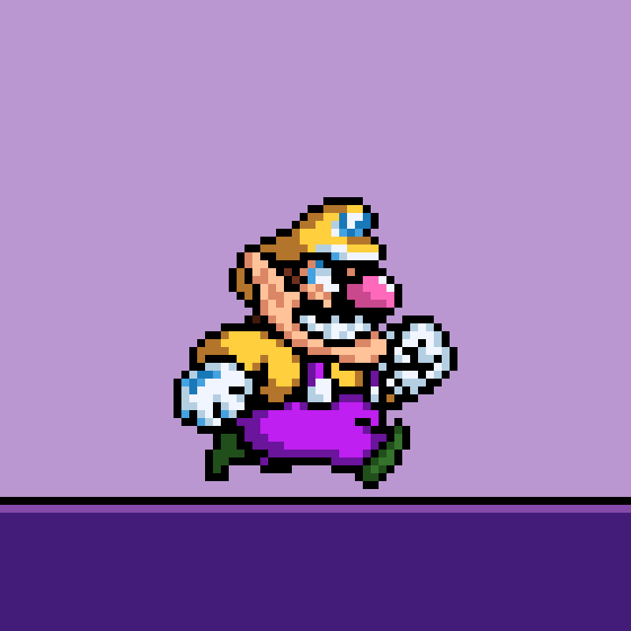
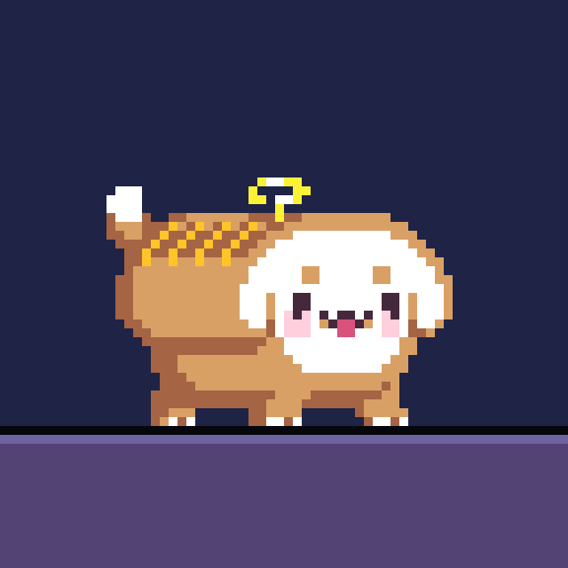
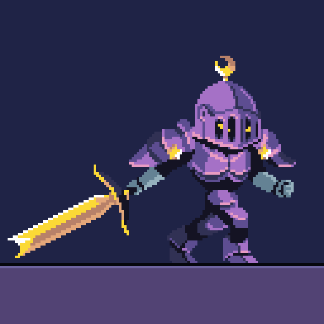
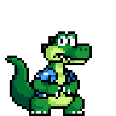
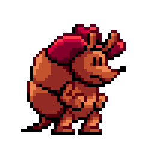
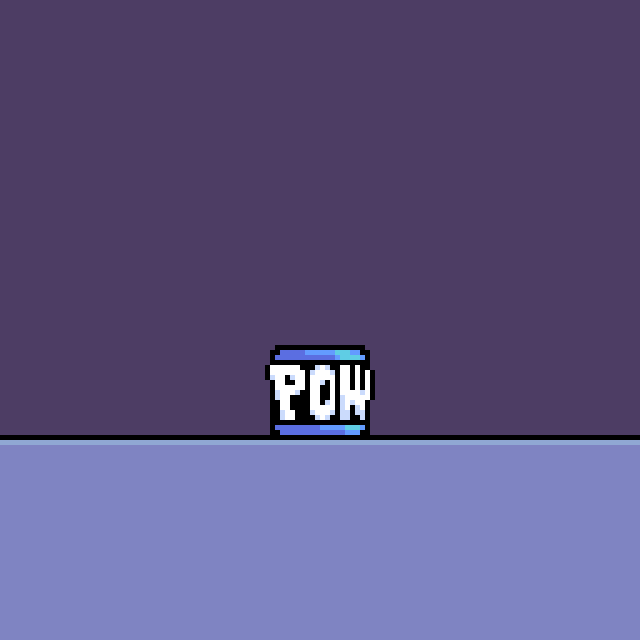

About Me
Hello, and welcome to my page. I'm Virgil West, and I make art and animation for video games.
I'm a 2D artist/animator based in Florida with a particular proficiency in game art. I have been a pixel artist since 2021, with a lot of experience in both hobbyist and professional settings. I specialize in character animation and strive to make game animations lively, visually pleasing, and often a bit cartoony.
Prior Experience
My first commercial animation project was for Chrono Gear: Warden of Time, a Hololive fan project in collaboration with holo Indie created by the mind behind Freedom Planet. I was brought on as a character animator, primarily to assist with NPCs and enemies, who were a lot more malleable animation-wise and allowed me to push their proportions to make them as expressive as possible. I am also responsible for the player's ability to pet the dog in that game.
A lot of my prior experience comes from my time in the Rivals of Aether workshop community, where I am known for moderately popular submissions such as Wario, Yoshi, and Sam Sheepdog.
Education
I graduated with a bachelor's degree in digital media from Florida State College at Jacksonville in 2023, and in May 2026 I plan to graduate from the University of Central Florida with a bachelor's in digital media.